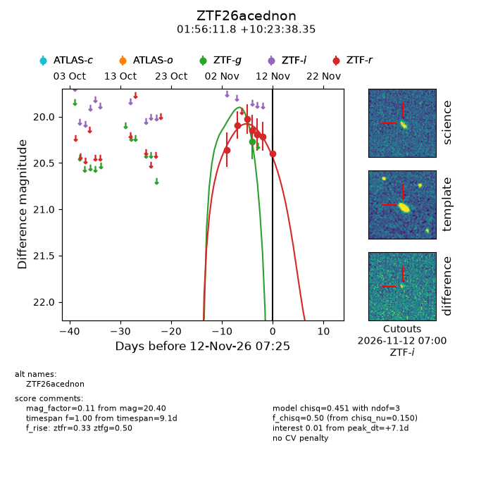
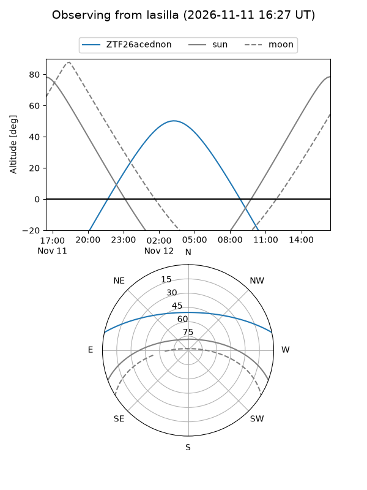
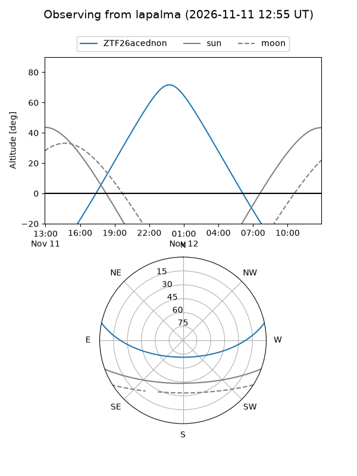
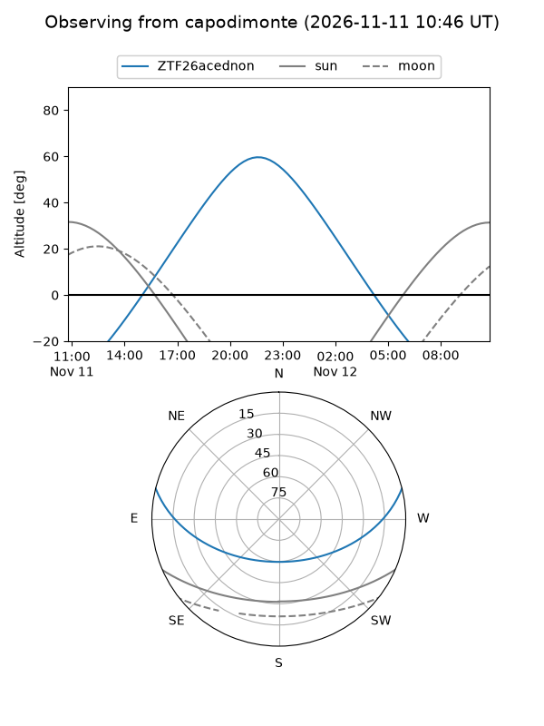
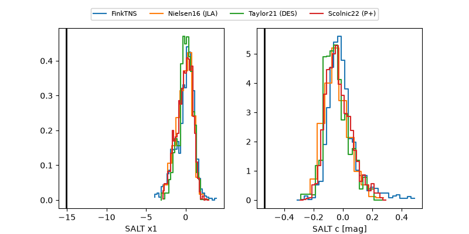

ZTF26acednon
Target ZTF26acednon at 2026-11-12 07:28
Aliases and brokers:
FINK-ZTF: ztf.fink-portal.org/ZTF26acednon
Lasair-ZTF: lasair-ztf.lsst.ac.uk/objects/ZTF26acednon
ALeRCE-ZTF: alerce.online/object/ZTF26acednon
Direct TNS query: direct search
alt names
ZTF26acednon (ztf,fink_ztf)
Coordinates:
equatorial (ra, dec) = 29.0494,+10.39399
equatorial (HMS+DMS) = 01:56:11.85,+10:23:38.35
galactic (l, b) = (147.8145,-49.32351)
Flags:
peak dt: +7.1
Photometry:
last ztfg=20.27, ztfr=20.40
1 ztfg, 7 ztfr detections
Lightcurve

Visibility



Additional plots
